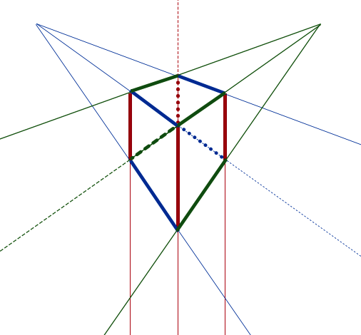

遠近法が何かというと、平面の上であたかも立体であるか(奥行きがあるか)のごとく目を錯覚させる技法。
考え方としてはシンプル。横に伸びた地平線があり、それに対してどの方角に向かう奥行きを作りたいか。この奥行きの方向の数によって少しずつ複雑になっていく。この方角の数は0〜6ぐらいまであるらしい。0から2ぐらいまではわりと簡単。実際どんな構図になるのかはこのサイト(英語)を見たらなんとなくわかると思う。どういう法則性なのかはこっちのサイト(英語)で詳しく説明している。私はこれが今まで見てきた資料の中で一番わかりやすいと思ったが、理系じゃなければ逆に難しいかもしれない。建築系やプロダクトデザイン系の人が遠近については詳しい。
さらっと見て原理がわかったら、自分の中で法則性を整理して理解するために試しに描く。遠近の概念と絵の知識がほぼない状態のとき、私は0点の立方体以外は描けなかった。理屈がわかると描けるようになった。
解説用の図形をPhotoshopで作ったが、作っている最中になんでIllustratorで作らなかったのかと後悔した(笑)。
これは奥行きの方向がない遠近法。たぶんこれが一番簡単。
この立方体を机に例えると、縦の長さ(緑の線)・横の長さ(青の線)・高さ(赤の線)がある。同じ色の線同士はどれだけ伸ばしても交差することはない。
平行な色数は3つ (赤・青・緑)。
同じ色の線たちのうち、１色だけがどこかで交差する。この図では縦の長さ(緑)が上の方でそのうち交差して1つにまとまる終着点がある。残りの２色の線はそのまま(交差することはない)。
平行な色数は2つ (赤・青)。
同じ色の線たちのうち、２色がどこかで交差する。この図では縦の長さ(緑)と横の長さ(青)が上の左右にちで集結している。赤い線はずっと並行 = 交差しない。
平行な色数は1つ (赤)。
 図作成中